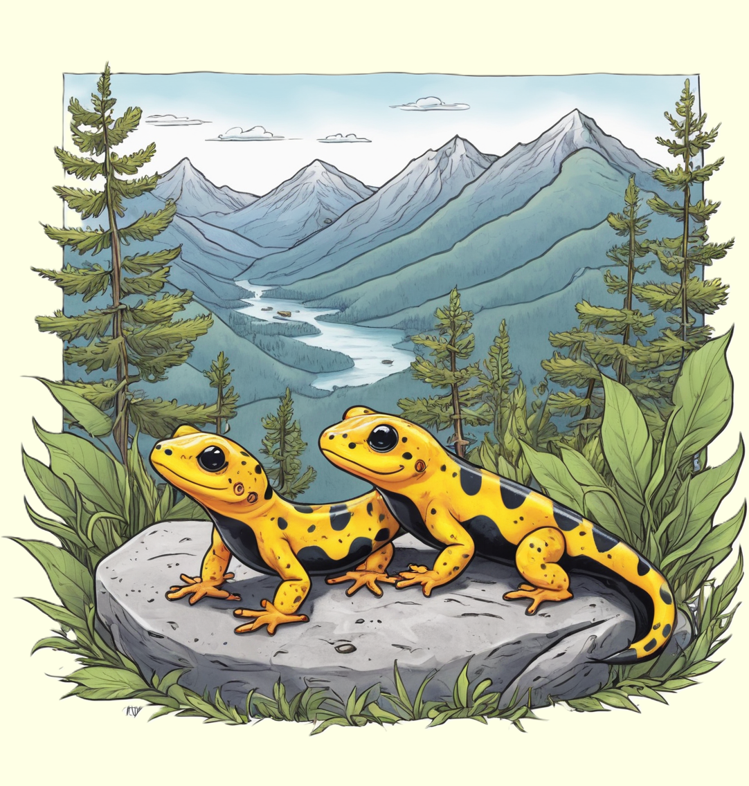

Der Feuersalamander, ein faszinierendes Amphibium, begeistert mit seinen auffälligen schwarzen und gelben Mustern.
Entdecke die spannende Welt dieses einzigartigen Kriechtiers und erfahre, wie es in feuchten Wäldern und Gewässern lebt.

Bunte Akrobaten im Wald
Feuersalamander sind auffällige Amphibien, die in verschiedenen Teilen Europas beheimatet sind. Ihr auffälliges Erscheinungsbild mit schwarzem Körper und leuchtend gelben Flecken macht sie zu wahren Farbkünstlern im Wald.
Die feurigen Farben der Feuersalamander dienen nicht nur der ästhetischen Pracht, sondern haben auch eine wichtige Funktion. Die leuchtenden Farben warnen mögliche Fressfeinde davor, dass Feuersalamander giftig sind. Diese Amphibien produzieren ein giftiges Sekret, das sie auf ihrer Haut tragen.
Geschickte Jäger im Wasser und an Land
Feuersalamander bevorzugen feuchte Umgebungen und sind oft in der Nähe von Gewässern anzutreffen. Ihre glatte, feuchte Haut ermöglicht es ihnen, Sauerstoff sowohl durch die Haut als auch durch die Lungen aufzunehmen. Ihr Lebensraum erstreckt sich zwischen Land und Wasser. Sie sind geschickte Jäger, die sich von kleinen Insekten, Würmern und anderen Kleintieren ernähren. Ihr Jagdverhalten kombiniert die Anpassung an Land- und Wasserumgebungen. Feuersalamander gleiten geschickt durch das feuchte Unterholz auf der Suche nach Beute, und ihre Jagdstrategien machen sie zu faszinierenden Bewohnern der Wälder.